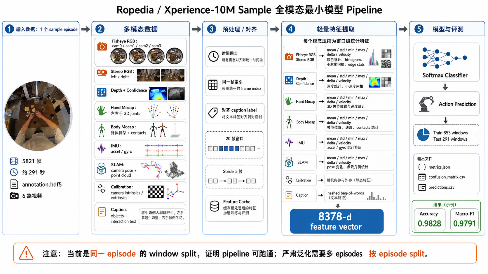
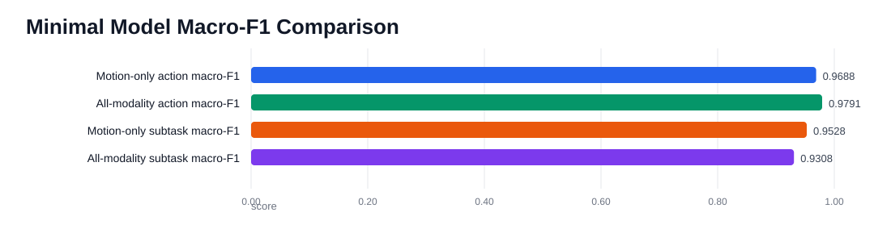
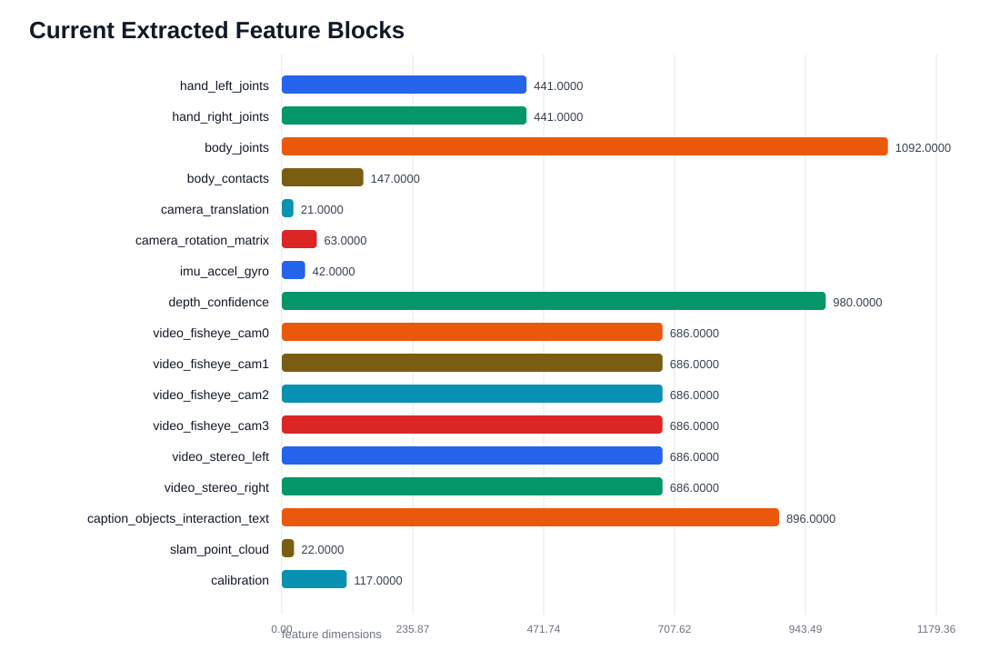
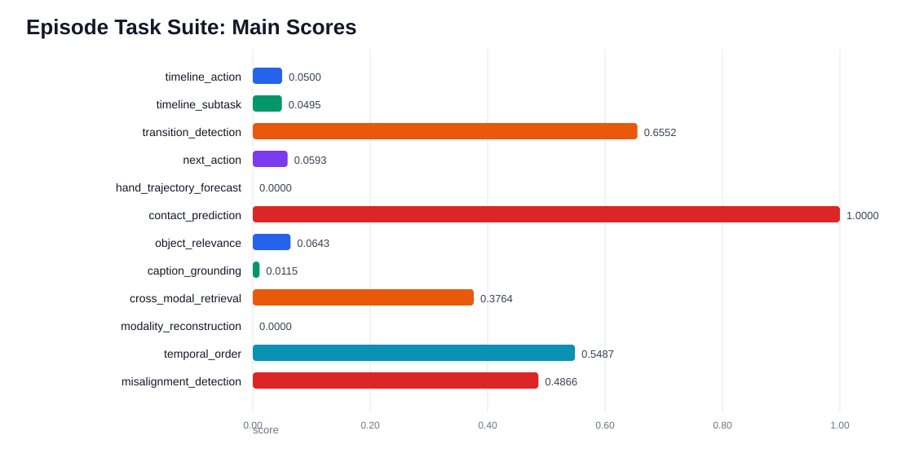
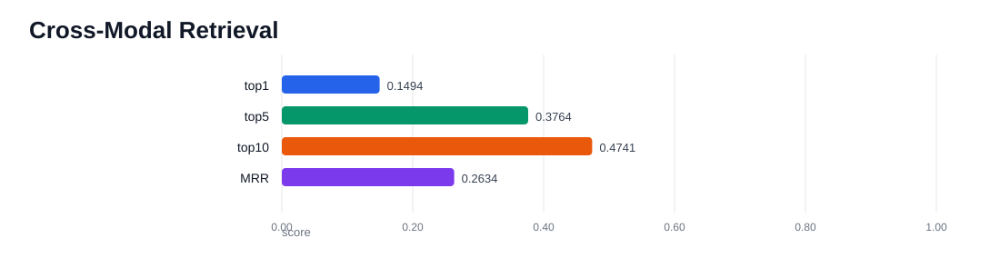

Pipeline

Model Comparison

| Model | Accuracy | Balanced Acc. | Macro-F1 | Weighted-F1 | Classes | Eval Windows |
|---|---|---|---|---|---|---|
| Motion-only action | 0.9828 | 0.9644 | 0.9688 | 0.9824 | 18 | 291 |
| Motion-only subtask | 0.9759 | 0.9784 | 0.9528 | 0.9779 | 14 | 290 |
| All-modality action | 0.9828 | 0.9801 | 0.9791 | 0.9828 | 18 | 291 |
| All-modality subtask | 0.9828 | 0.9505 | 0.9308 | 0.9838 | 14 | 290 |
All-Modality Feature Vector
The all-modality window feature has 8378 dimensions across motion, video, depth, text, point cloud, and calibration features.

Episode Task Suite


| Task | Input / Output | Main Score | Accuracy | Macro-F1 | MRR | MPJPE |
|---|---|---|---|---|---|---|
timeline_action | all modalities -> current action label | 0.0500 | 0.0292 | 0.0500 | n/a | n/a |
timeline_subtask | all modalities -> current subtask label | 0.0495 | 0.0581 | 0.0495 | n/a | n/a |
transition_detection | all modalities -> action boundary/steady | 0.6552 | 0.9253 | 0.6552 | n/a | n/a |
next_action | all modalities at t -> action at t+20 frames | 0.0593 | 0.0345 | 0.0593 | n/a | n/a |
hand_trajectory_forecast | all modalities at t -> future left/right hand 3D joints | 0.8223 | n/a | n/a | n/a | 0.8223 |
contact_prediction | all non-contact/non-caption-label modalities -> any body contact | 1.0000 | 1.0000 | 1.0000 | n/a | n/a |
object_relevance | all non-caption modalities -> current relevant object set | 0.0643 | n/a | 0.0643 | n/a | n/a |
caption_grounding | caption objects/interaction text query + candidate sensor windows | 0.0115 | n/a | n/a | 0.0172 | n/a |
cross_modal_retrieval | motion/IMU/camera query | 0.3764 | n/a | n/a | 0.2634 | n/a |
modality_reconstruction | motion/IMU/camera | -0.0160 | n/a | n/a | n/a | n/a |
temporal_order | two adjacent windows -> whether order is correct | 0.5487 | 0.4612 | n/a | n/a | n/a |
misalignment_detection | motion+visual pair -> aligned vs shifted by 8 windows | 0.4866 | 0.5029 | n/a | n/a | n/a |
Interpretation
These results are for one sample episode. They are useful for validating data loading, modality alignment, task definitions, and baseline code. They should not be treated as evidence of cross-episode generalization. The next serious step is to run the same suite over many episodes and split train/test by episode.